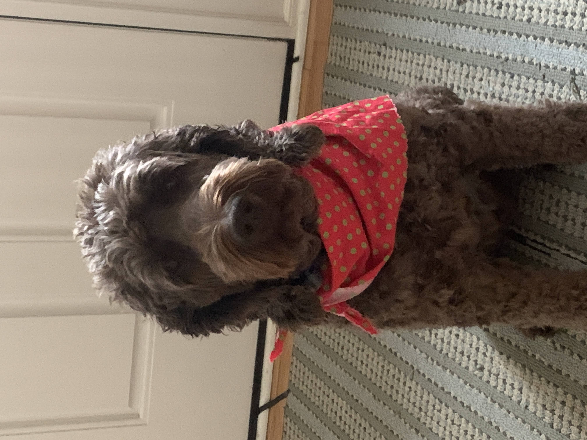
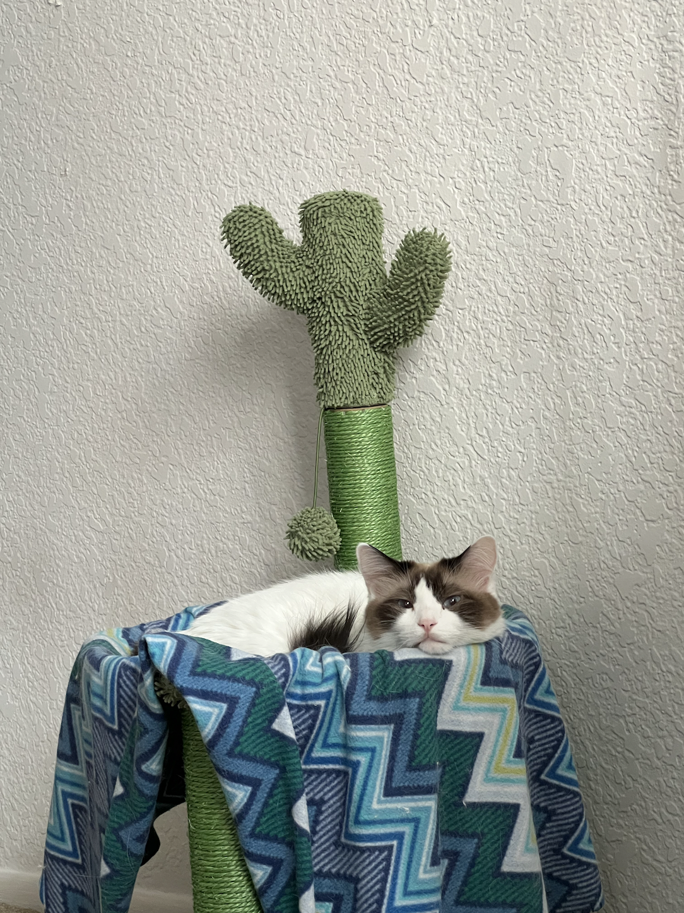
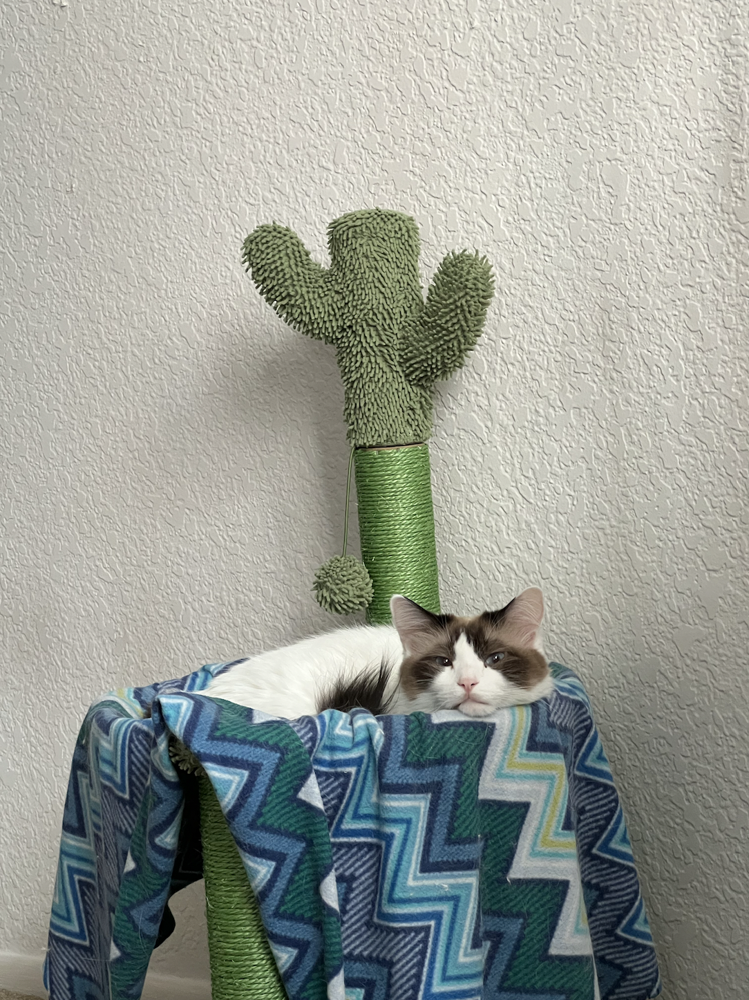

Pets
Bacon Q Dog

Bacon Q. Dog is a 9yr old labradoodle. He prefers to spend his days lounging among the three different beds/couches that his family has gifted him. He enjoys a walk or two around the neighborhood, as long as he can pretend that he doesn't see any of the other animals to avoid the embarrassment of not wanting to admit he has no wolf-like skills in chasing them.
At night just as the rest of the family is ready to relax, Bacon suddenly wants to release all of his energy. He will place his toys on a mini couch and frantically drag the couch around, giving his toys "a ride." There is also a lot of rolling. Lots and lots of rolling.
Photo Gallery


Likes
- Belly rubs
- Playing tug-of-war
- Sneaking onto the couch
Van Gogh Cat

Van Gogh is a three year old cat of mixed ragdoll and domestic shorthair breed. He was adopted when he was 7 months old. Van Gogh has been a people cat since he was young. He craves attention but needs alone time when he wants it. He is purely a masterpiece when his sapphire eyes staring at his human friends. He loves birds, rats, insects, and water from human mug.
Van Gogh is responsible for his household safety. But he gets scared when the vacuum machine wakes up. He tries his best to make defense but his beautiful fur coat gets messed up immediately when he gets too close. By the way, he likes his fur coat being brushed by himself. He bites when he does not get enough attention, but he always gets what he wants.
Photo Gallery

 

Likes
- Biting his human
- Chicken Breast
- His catnip pillow